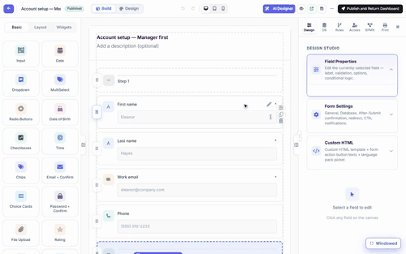
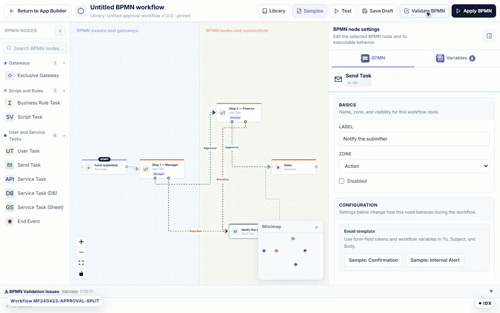

Workflow library — one workflow, many forms
Approval flows tend to repeat: manager approves, then finance is the same shape whether the form is an account request or a purchase order. MegaForm lets you save a workflow to a site-wide library and apply it to as many forms as you like — with versioning, so a form in production does not change behind your back.
Design the workflow visually
Every form has a BPMN tab in the builder: a visual editor with a node palette on the left, the diagram on a zoomable canvas (with a minimap), and the selected node's settings on the right.

Steps shown
- Open a form in the builder and click the BPMN tab. The recording opens a real two-step flow: Form submitted → Step 1 — Manager → Step 2 — Finance → Done, with a rejected branch that emails the submitter.
- Click a node — its settings open on the right: label, swim-lane zone, candidate roles/users, due time, the submission status to write on each outcome, and per-node variables.
- Nodes drag freely on the canvas; edges carry the Approved / Rejected outcome labels.
- Validate BPMN checks the diagram before you apply it.
The palette covers more than approvals: exclusive gateways for branching, business-rule and script tasks, user tasks, send (email) tasks, service tasks that call an API, a database, or a Google Sheet, and end events. Test runs the flow against a sample submission, and Apply BPMN makes the drawn flow the one that really executes — until then you are editing a draft.
Reuse it across forms
The Library button in the BPMN toolbar opens the site's workflow library.

Steps shown
- On the first form, the header already reads Library: Unified approval workflow v1.0.0 · pinned — this form runs a library workflow. Library opens the dialog: the template list shows Unified approval workflow and how many forms use it.
- On the second form (a plain per-form workflow until now), open BPMN → Library, select the template and click Apply.
- The banner switches to This form runs Unified approval workflow v1.0.0 — pinned to this version, and the template row now counts 2 forms. Both forms now execute the same flow.
Versions and pinning
Applying a library workflow pins the form to the version you applied. Editing the template later does not silently change a form that is already in production — the form keeps running its pinned version until you re-apply. If you prefer the opposite behaviour, each form has an auto-update when the template changes option in the same dialog. Unbind returns the form to its own per-form workflow.
The library dialog is also where a workflow gets into the library: save the currently open diagram as a new template (name, category, description), or push it as a new version of an existing template.
Next steps
- Approval Workflows & Inbox — what approvers see when this flow runs.
- Workflow — node reference and post-submit actions.